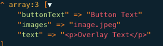

<div class="block">
	<div class="container site-border">
		<h1>Redaxo CMS</h1>
		<p>Hier der Link zur Redaxo Dokumentation: <a href="https://redaxo.org/doku/5.x/">CLICK ME</a></p>
		<h2>Redaxo Adminer</h2>
<p>Adminer ist ein kompakter Datenbankbrowser, der sich als Alternative zu phpMyAdmin eignet. Er ermöglicht den Zugriff auf verschiedene Datenbanken wie MySQL, PostgreSQL, SQLite und Oracle.

</p>
<p>Admin + er == jemand, der administriert.</p>
<p>Typisch für Tabellen ansehen, Inhalte ändern, Datensätze hinzufügen, Sortierungen ändern, debuggen</p>

<h2>SQL = Structured Query Language</h2>
<p>Sprache, um Daten aus einer Datenbank zu lesen, ändern oder zu löschen</p>
<p>Die Inhalte liegen in MySQL / MariaDB. PHP benutzt SQL, um diese Daten zu holen.</p>
<p>"Gib mir diese Spalten aus diesen Tabellen, unter diesen Bedingungen, in dieser Reihenfolge"</p>
<h3>SELECT</h3>
<p>SELECT = Was will ich sehen. Bsp: SELECT name, description -> Zeig mir die Spalten name und description.
		SELECT * -> Zeig mir alle Spalten
		SELECT c.id AS category_id, c.step AS category_step, c.name AS category_name, ... -> c.id bedeutet Spalte id aus Tabelle c.
AS category_id -> Alias</p>
</p>
<h3>FROM</h3>
<p>FROM fireconf_categories c -> Die Daten kommen aus der Tabelle fireconf_categories mit dem Alias c. Ein Alias ist hierbei einfach
		ein lesbarerer Name für eine Tabelle oder eine Spalte.
		FROM fireconf_categories c LEFT JOIN fireconf_options o ON o.category_id = c.id -> SELECT c.id, o.title
</p>
<h3>JOIN</h3>
<p>JOIN = Daten aus mehreren Tabellen kombinieren
		LEFT JOIN fireconf_options o ON o.category_id = c.id -> Hänge Optionen o an Kategorien c, wenn option.category_id = category.id

</p>
<h3>WHERE</h3>
<p>WHERE c.step = 1 -> Filtere nach Kategorien mit Schritt 1
		WHERE o.subcategory_id IS NOT NULL -> Filtere nach Optionen, die eine Subkategorie haben
</p>
<h3>ORDER BY</h3>
<p>ORDER BY c.position, o.position -> Sortiere die Ergebnisse nach einer oder mehreren Spalten</p>
<p>c.id AS category_id, o.position AS option_position</p>

<h3>Merke: SELECT (was) FROM (von) JOIN (verknüpfte Tabellen) WHERE (Filter) ORDER BY (Sortierung)</h3>

<p>AdminerEvo ist eine Abzweigung (Fork) von Adminer. Dort sind Fixes gegen SSRF und DoS Probleme aktuell. Die Version ist generell aktueller.</p>
<p>Importieren = Daten oder ganze Tabellen in die Datenbank hochladen. zB Backup wiederherstellen</p>
<p>Exportieren = Daten oder ganze Tabellen aus der Datenbank herunterladen. zB Backup erstellen</p>

<h2>Installer</h2>
<p>Im Installer können AddOns heruntergeladen werden. Bei einer Aktualisierung eines AddOns wird automatisch ein
	Backup der alten AddOn Verzeichnisse erstellt. Diese werden unter redaxo/data/addons/install abgelegt.
</p>
<p>Im Bereich "Vorhandene aktualisieren" wird aufgelistet, welche AddOns und Bestandteile aktualisiert werden können.
</p>

<h2>AddOns = Erweiterung</h2>
<p>Addons werden über den Installer Downloadbereich installiert. Eigene AddOns werden ins Verzeichnis /redaxo/src/addons/ hochgeladen.
	Ordnername sollte identisch mit dem AddOn-Key sein, der in der package.yml hinterlegt ist.
</p>
<p>Bei Klick auf installieren eines AddOns wird es technisch eingerichtet zB kopieren von CSS und JS Dateien, das Anlegen von 
	Datenbanken durchgeführt und die install.php wird ausgeführt. Danach kann es aktiviert (Redaxo lädt das AddOn bei jedem Request und die Funktionen 
	stehen zur Verfügung) und anschließend verwendet werden.
</p>
<h3>Update</h3>
<p>Bei einem Update immer die Hinweise im Installer beachten und vorab ein Backup machen (empfohlen).</p>
<h3>Reinstallation</h3>
<p>Bei Problemen mit einem AddOn kann das AddOn reinstalliert werden. Dabei wird das AddOn erneut installiert und 
	Einstellungen und Dateien werden korrigiert. Vom Core werden die Bedingungen aus der package.yml neu geprüft und die
	install.php, install.sql werden geladen und die Assets frisch kopiert.
</p>
<h3>Deinstallation</h3>
<p>Das AddOn oder das PlugIn entfernt seine angelegten Dateien und Tabellen vollständig. Einige AddOns behalten
	die Daten jedoch weiterhin.
</p>
<table>
	<tr><th>Kategorie</th><th>Beschreibung</th></tr>
	<tr><td>System AddOn</td><td>Bestandteile des Core Systems. Diese sind systemrelevant und können nicht
		gelöscht werden. Ein AddOn ist immer eine eigenständige Erweiterung.
	</td></tr>
	<tr><td>System Plugin (stroke Symbol links)</td><td>Diese gehören zu einen AddOn und können nicht gelöscht werden. "Plug in" heißt so viel wie einstecken, also eine
		kleine Erweiterung zu einem AddOn, die hinzugefügt wird.
	</td></tr>
	<tr><td>Löschbare AddOns</td><td>Das sind AddOns aus dem Installer Store. Diese sind installierbar, deaktivierbar und löschbar.</td></tr>
</table>
<table>
	<tr>
		<th>AddOn</th>
		<th>Zweck</th>
	</tr>
	<tr>
		<td>redaxo (System Plugin)</td>
		<td>Kern Backend von REDAXO. Liefert das Default-Design des Backend.</td>
	</tr>
	<tr>
		<td>phpmailer</td><td>Bindet die PHPMailer-Klasse ein für den Versand von Emails.</td>
	</tr>
	<tr>
		<td>be_style (System AddOn)</td>
		<td>Stellt das Backend-Design von REDAXO zur Verfügung</td>
	</tr>
	<tr>
		<td>install (System AddOn)</td>
		<td>Veröffentlichung und Download von AddOns</td>
	</tr>
	<tr>
		<td>structure (System AddOn)</td>
		<td>Verwalten von Artikeln/ Inhalten innerhalb der Seiten</td>
	</tr>
	<tr>
		<td>content (System AddOn)</td>
		<td>Verwalten von Artikeln/ Inhalten innerhalb der Seiten</td>
	</tr>
	<tr>
		<td>users (System AddOn)</td>
		<td>Verwalten von Benutzern und Berechtigungen innerhalb des Backends</td>
	</tr>
	<tr>
		<td>media_manager / mediapool (System AddOn)</td>
		<td>Verwalten von Medien (Bilder, Videos, Dateien) innerhalb des Backends</td>
	</tr>
	<tr>
		<td>metainfo (System AddOn)</td>
		<td>Stellt Metadaten für Artikel und Kategorien zur Verfügung</td>
	</tr>
	<tr><td>project (System AddOn)</td>
	<td></td></tr>
	<tr>
		<td>debug</td>
		<td>Hilft bei Fehlersuche und Anzeige von SQL/PHP Problemen</td>
	</tr>
	<tr>
		<td>history</td>
		<td>Versionierung von Artikeln</td>
	</tr>
	<tr>
		<td>cronjob</td>
		<td>Zeitgesteuerte Aufgaben (zB automatische Backups)</td>
	</tr>
	<tr>
		<td>optimize_tables</td>
		<td>Datenbank-Optimierung und Wartung</td>
	</tr>
	<tr>
		<td>version</td>
		<td>Versionierung von Artikeln und Änderungen nachvollziehen. (Button rechts (Uhr) neben Editiermodus in einem Artikel).
			Links ist aktuelle Version (wählbar auch zu Arbeitsversion). Rechts sind alle Versionen wählbar per Dropdown. Liveversionen können auch
			zu Arbeitsversion übernommen werden und andersrum.
		</td>
	</tr>
	<tr>
		<td>ck5</td>
		<td>Moderner WYSIWYG-Editor für Artikeltexte (nur für textfieldArea gedacht)</td>
	</tr>
	<tr>
		<td>redactor</td>
		<td>Alternativer Editor</td>
	</tr>
	<tr>
		<td>sprog</td>
		<td>Übersetzungen / Sprachhandling im Backend</td>
	</tr>
	<tr>
		<td>yform</td>
		<td>Formular-Framework - Formulare, Validierungen, Datenbanktabellen</td>
	</tr>
	<tr>
		<td>search_it</td>
		<td>Erweiterte Textsuche im Frontend</td>
	</tr>
	<tr>
		<td>backup (System AddOn)</td>
		<td>Backup und Wiederherstellung von Daten / älteren Versionen</td>
	</tr>
	<tr>
		<td>2factor_auth</td>
		<td>Zwei-Faktor-Authentifizierung für erhöhte Sicherheit</td>
	</tr>
	<tr>
		<td>maintainance</td>
		<td>Wartungsmodus / Temporäres Deaktivieren des Frontends</td>
	</tr>
	<tr>
		<td>customizer (System Plugin)</td>
		<td>Anpassung von Backend Styles, Farben, Code Highlighting, Link zum Frontend</td>
	</tr>
	<tr>
		<td>cropper</td>
		<td>Bildzuschneiden und -bearbeiten im Backend</td>
	</tr>
	<tr>
		<td>mblock</td>
		<td>Bausteine für komplexere Inhalte (flexible Inhaltsblöcke)</td>
	</tr>
	<tr>
		<td>uploader</td>
		<td>Zusätzliche Upload-Funktionen für Medien</td>
	</tr>
	<tr>
		<td>blÖcks</td>
		<td>Module / Blöcke online, offline schalten. Per Drag&Drop verschieben, sowie kopieren, ausschneiden
			und einfügen</td>
	</tr>
</table>

<h3>Installation eigener AddOns</h3>
<p>Eigene AddOns können direkt aus der REDAXO Installation in den Downloadbereich hochgeladen und zum Download
	bereit gestellt werden. Dafür wird ein API Key benötigt. Für einen Nutzername und
	API-Key sollte ein Konto unter MyREDAXO redaxo.org/myredaxo/login angelegt werden. Dort lässt sich dann ein API-Key erstellen, den man 
	für verschiedene Aktionen benötigt, um diese durchführen zu können. Dieser API-Key sollte nicht weitergegeben werden, da man mit dem Key und dem
	eigenen Login Versionen veröffentlichen, löschen oder ändern kann. Das AddOn, welches man veröffentlichen will, muss existieren. Dafür muss der 
	API-Key in den Installer Einstellungen eingetragen werden. Nur dadurch kann erkannt werden, zu welchen AddOns man
	Zugriff hat. Die Module sind dann lokal in der Redaxo Installation verfügbar. Um diese öffentlich zu machen müssen sie in den AddOn Store hochgeladen werden. Dafür
	müssen sie allerdings kompatibel, dokumentiert und getestet sein.
</p>
<p>Meine Packages (Installer - linker Reiter): Unter "Core & Packages - Eigene hochladen" lassen sich nun AddOns einsehen, die bereits registriert sind
	und auch in der lokalen Installation vorhanden sind. Wenn ein AddOn hochgeladen werden möchte, dann muss genau dieses in der lokalen Installation
	zur Verfügung stehen.
</p>
<p>Um ein AddOn zu veröffentlichen oder eine neue Version aufzuspielen, wählt man das gewünschte AddOn in der Liste aus. Mit + lässt sich eine
	neue Version erstellen.
</p>
<p>Versionen werden direkt aus dem lokalen AddOn selbst herangezogen (package.yml). </p>
<p>Manche Dateien werden bei der Entwicklung benötigt, die im eigentlichen AddOn nicht erforderlich sind. Diese Dateien
	kann man in der package.yml auf ignorieren setzen.
</p>
<pre>
	installer_ignore:
	- node_modules
	- .env
	- src
</pre>
<h4>Vorgehen hierzu: </h4>
<p>Erstellung des AddOn Keys: Jedes AddOn hat eine eindeutige Kennung (key), diese ist auch der Ordnername. Um einen
	passenden Key zu registrieren und auch die Bezeichnung und Beschreibung des AddOns festzulegen, muss unter "Meine Addons" eine
	AddOn Definition mit dem passenden Key angelegt werden.
</p>

<h2>REX_VALUE[]</h2>
<p>ruft Inhalte der Eingabefelder ab und gibt sie zurück. Beispiel bei Eingabe:</p>
<pre>
	->addFieldSetArea('Card 1')
				->addTextField('1.buttonText', ['label' => '1. Button Text'])
				->addMediaListField('1.images', ['label' => '1. Bilder'])
</pre>
<p>Ausgabe mit REX_VALUE[]; liefert dann:</p>
<pre>{&quot;buttonText&quot;:&quot;Button Text&quot;,&quot;images&quot;:&quot;image.jpeg&quot;,&quot;text&quot;:&quot;&lt;p&gt;Overlay Text&lt;\/p&gt;&quot;}</pre>
<p>Das wäre übersetzt: {"buttonText":"Button Text","images":"image.jpeg","text":"Overlay Text"}</p>

<p>geparsed als Array mit rex_var::toArray('REX_VALUE[1]'); wäre das dann:</p>


<h2>Methoden</h2>
<h3>explode()</h3>
<p>explode(',', $string) erzeugt ein Array aus einem String, der durch ein Trennzeichen ',' getrennt ist.</p>
<pre>Eingabe:
		$images = "bild1.jpg,bild2.jpg,bild3.jpg";
		$result = explode(',', $images);
</pre>

<pre>Ausgabe:
		[
			"bild1.jpg",
			"bild2.jpg",
			"bild3.jpg"
		]
</pre>

<h3>array_filter()</h3>
<p>array_filter($array) entfernt leere Einträge aus einem Array. Räumt es quasi auf.</p>
<p>Eingabe:
	array_filter([
  		"bild1.jpg",
  		"",
  		"bild2.jpg",
  		""
	]);
</p>
<p>Ausgabe:
	[
  		"bild1.jpg",
  		"bild2.jpg"
	]
</p>

<h2>REX_ARTICLE[]</h2>
<p>setzt den Inhalt des aktuellen Artikels ein. Dieser besteht aus einer Liste von slices. Jede slice
	ist dabei eingefügtes Modul mit seinen Werten. Dieser Inhalt wird dann
	an genau dieser Stelle gerendert.
</p>
<h2>REX_TEMPLATE[key=]</h2>
<p>gibt die ID des genannten Templates zurück und lädt das Template</p>
<h2>rex_category</h2>
<p>holt die Kategorie zB per id</p>
<pre>$data = rex_category::get(313)->getArticles(true, 'priority');</pre>
<p>holt Kategorie mit ID 313 (Rückgabe ist rex_category Objekt) und greift auf alle online gestellten (true) Artikel zu nach Priorität sortiert.
	Rückgabe des gesamten ist ein Array von rex_article, die bereits in der Reihenfolge nach Priorität sortiert sind.
</p>
<pre>$navLevel1 = rex_category::getRootCategories(true);</pre>
<p>holt alle Kategorien des obersten Levels, die online geschalten sind (true).</p>
<h3>::getId()</h3>
<p>gibt die ID des Artikels zurück (int)</p>
<h2>rex_article::getCurrent()</h2>
<p>gibt den aktuellen Artikel zurück, der gerade im Frontend angezeigt wird als rex_article Object zurück. Nützlich wenn Daten 
	zur aktuellen Seite ausgegeben werden sollen
</p>

<h2>Redaxo Addons</h2>
<p>Zunächst wird unter redaxo/addons/mein-addon/ das gewollte addon angelegt. Der Ordnername ist hierbei
	der AddOn Key.
</p>
<p>Wichtig ist die package.yml. Darin erkennt Redaxo das AddOn. install.sql und uninstall.sql sind für 
	das installieren und deinstallieren des Addons.
</p>
<h2>clang - Content Language</h2>
<p>Jede Sprache bekommt in Redaxo eine ID. Also deutsch = 1, englisch = 2 usw. Diese IDs stehen in der
	Tabelle rex_clang
</p>
<p>$currentLang = rex_clang::getCurrentId(); liefert die aktuell aufgerufene Sprache.</p>
<h2>rex_getUrl(int $article_id, int $clang_id)</h2>
<p>erzeugt eine URL für diesen Artikel, aber in Sprache $clang_id</p>
<h2>rex_request('func', 'string');</h2>
<p>Holt den Request-Parameter func als sicheren String aus GET/POST oder COOKIE. index.php?page=example&func=edit zB ergibt
	$func = "edit";. Intern wird ungefähr so gesucht: $_POST['name'] ?? $_GET['name'] ?? $_COOKIE['name']
</p>
<p>Macht Typprüfung, Filterung und Casting. SQL-Injection verhindert man erst mit:
rex_sql + Prepared Statements</p>
<h2>$sqlCategories = rex_sql::factory();</h2>
<p>Redaxo erstellt ein SQL-Objekt mit dem Datenbankabfragen ausgeführt werden können.</p>
<h2>$sqlCategories->setQuery("SELECT id FROM database ORDER BY position ASC");</h2>
<p>Hole id aus der Datenbank database aufsteigend. setQuery führt eine SQL Abfrage durch. Gespeichert werden die ids (Result Set)
	in $sqlCategories 
</p>
<h2>hasNext()</h2>
<p>Prüft ob es noch eine weitere Zeile im SQL Ergebnis gibt. Gibt true oder false zurück.</p>
<h2>Redaxo Umzug einer Seite</h2>
<p>Eine Redaxo Seite besteht immer aus Dateisystem (Dateien und Ordner, die per FTP hochgeladen werden), aus der Datenbank (MySQL) die die Inhalte, Struktur, Module und Einstellungen
	enthält und aus der Server Konfiguration (PHP Version, Domain, Pfade, etc).
</p>
<p>Vorgehen wäre:</p>
<ol>
	<li>Branch für inside.at in Gitlab erstellen (Fork Kopie) und umbenennen</li>
	<li>Subdomain für relaunch.inside.at erstellen</li>
	<li>Redaxo Anleitung mit Redaxo Setup durchgehen</li>
	<li>straehle.de auf relaunch.inside.at übernehmen (Import per Backup Addon)</li>
	<li>Prüfen ob alle Dateien übernommen wurde, in der config.yml in safe mode gehen und privater Tab</li>
</ol>
<p>Alle relevanten Dateien auf den neuen Server kopieren per Transmit. Das sind redaxo/, assets/, media/, zusätzliche Ordner für
	Addons oder Funktionen, index.php und .htaccess (Hier darauf achten diese vollständig zu übernehmen) und alle versteckten Dateien.
	Die .htaccess kommt immer in den root, bei dem die Domain drauf zeigt.
</p>
<p>Es bietet sich an in der config.yml in Zeile 3 in den safe mode zu gehen. Desweiteren immer in privatem Tag aufrufen.</p>
<p>Mögliche Fehlerquellen: Google Bot bzw Google Analytics: die müsste man im Head und default auskommentieren, wenn sie erstmal nicht benötigt werden.
	Fehler in dessen Skripte können nachfolgende Skripte blockieren, was zu einem weißen Bildschirm führen kann. Selbiges auch mit Cookiebot. Ebenso könnte es sein, dass die 
	.htaccess nicht vollständig übernommen wurde, was zu einem Fehler führen kann.
</p>
</div>
</div>